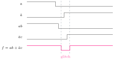

Definition
A glitch is a transition of a node that is not needed by its final value in the cycle. A static hazard is a glitch on an output that should stay constant (); a dynamic hazard is multiple transitions on an output that changes once. Cause: different delays on reconverging paths.
Example
with : whatever  . When falls, the term
. When falls, the term  turns off immediately while turns on only after the inverter delay:
turns off immediately while turns on only after the inverter delay:  dips to 0 for one inverter delay. The redundant consensus term holds and removes the hazard.
dips to 0 for one inverter delay. The redundant consensus term holds and removes the hazard.
Picture

falls, drops before rises and the output briefly goes to 0.The output dips while is still catching up.
Coping with glitches
- balance path delays (logic restructuring, balanced trees, delay insertion);
- add redundant (consensus) terms for static hazards;
- register intermediate results: a synchronous design samples after settling, so glitches cost power but not correctness;
- never use combinational outputs as clocks or asynchronous resets.
Intuition
Signals racing along paths of different length disagree for a moment; the gate reports the disagreement, and every report costs energy.
Pitfall
Zero-delay simulation and probability-based estimates see no glitches at all; power estimation needs timing-aware simulation.